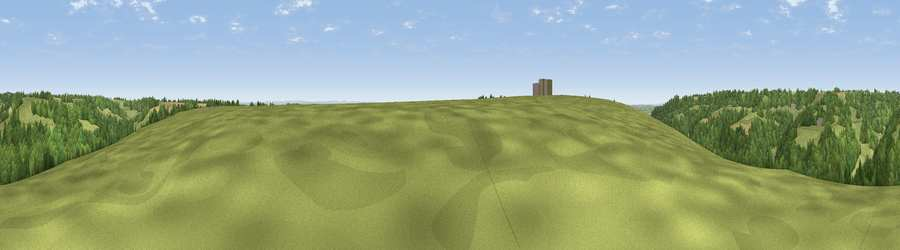

Viewpoint near Ozleworth
#40456 in England · top 76% of its area beats it · near OzleworthWhere it is
The exact computed spot (ST 80075 92325). Click the marker for map links.
The view, rendered

A 360° render of this exact spot computed from the terrain model, tree cover and land cover — summer colours, afternoon light, calibrated against photographs of famous viewpoints. Real trees, hedges and buildings will differ in detail.
The panorama
Grey silhouette: terrain skyline in each direction (720 bearings, Earth curvature and refraction included). Dashed green: skyline with trees (+15 m) and buildings (+8 m) as obstacles. Blue strip: how far the ground is visible on each bearing.
Where the view opens
Wedge length = distance to the farthest visible ground on that bearing (vegetation-aware). Rings at 10, 25 and 50 km.
What fills the view
59% woodland · 36% grassland · 5% cropland
Angular shares of the visible panorama (visual magnitude), not map area. Landscape diversity 0.36 (0–1 Shannon).
Key numbers
More beautiful places nearby
The staircase of upgrades: each row has a higher view potential than everything closer. Driving times are estimates from straight-line distance, calibrated against real road routing — check an actual route before setting out.
| Place | Direction | Drive | Score |
|---|---|---|---|
| Viewpoint near Ozleworth | NNE · 1 km | ~3 min | 34.9 |
| Viewpoint near Wortley | W · 3 km | ~7 min | 67.8 |
| Wotton Hill | WNW · 5 km | ~11 min | 70.7 |
| Viewpoint near North Nibley | WNW · 6 km | ~13 min | 76.3 |
| Viewpoint near Stinchcombe | NW · 9 km | ~17 min | 80.5 |
| Nottingham Hill | NNE · 40 km | ~60 min | 80.9 |
| Chase End Hill | N · 43 km | ~63 min | 81.5 |
| Ragged Stone Hill | N · 44 km | ~64 min | 82.5 |
51.62938, -2.28926 · source: screening · position refined by local search. Computed location — check access rights before visiting.